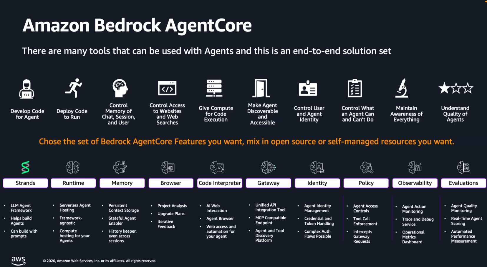

From Concepts to Deployment
March 2026
An AI Agent is a system that uses an LLM as its core reasoning engine to autonomously decide what actions to take and in what order, in order to accomplish a user-defined goal.

Source: © 2026, Amazon Web Services, Inc.
The "brain" — Claude, GPT-4o, Gemini, Llama, etc. Handles reasoning, task decomposition, and language understanding.
Strands Agents SDK — build agents with simple prompts. Open-source, model-agnostic, Python-native.
Packaged instructions that define role, workflow & constraints — portable across Claude, Codex & more.
Private data sources (S3, databases, vector stores) for accurate, context-aware retrieval.
Lambda functions, REST APIs, code interpreters & MCP servers that let agents act in the real world.
Unified API integration — MCP-compatible endpoint for agent & tool discovery across platforms.
Web access and automation — browse, scrape, and interact with web pages programmatically.
Short-term: conversation context within a session.
Long-term: persistent state across sessions.
Agent identity management with credential & token handling. Supports complex auth flows (OAuth, SAML).
Safety policies, content filtering, tool-call enforcement, and least-privilege access controls.
Monitoring: trace, debug, operational metrics.
Evaluations: real-time scoring & automated
performance measurement.
Agentcore Runtime — framework-agnostic serverless compute. No infra to manage.
User → [Agent + Tools] → ResponseUser → Supervisor Agent
├── Research Agent (web search)
├── Coder Agent (code gen)
└── Reviewer Agent (validation)Tasks completed step-by-step; each agent's output feeds the next.
Multiple agents execute simultaneously. Results aggregated downstream.
Directs queries to the best model by complexity or cost.
Iteratively refines output via a feedback loop until criteria met.
Decorator functions, class methods, or built-in tools. Clean separation of reasoning vs. execution.
Open standard (MCP) to connect agents to external tools via STDIO or Streamable HTTP.
Specialized worker agents exposed as callable tools to a central orchestrator.
Autonomous peers collaborate with shared memory & dynamic handoffs.
DAG-based orchestration: nodes are agents, edges define dependencies.
| Framework | By | Language | Highlights |
|---|---|---|---|
| LangGraph | LangChain | Python / JS | Graph-based orchestration, cycles, persistence, human-in-the-loop |
| CrewAI | CrewAI Inc. | Python | Role-based multi-agent teams, built-in task delegation |
| AutoGen | Microsoft | Python / .NET | Multi-agent conversations, code execution, extensible |
| OpenAI Agents SDK | OpenAI | Python | Lightweight, built-in tracing, handoffs, guardrails |
| Semantic Kernel | Microsoft | C# / Python / Java | Enterprise-ready, plugins, planners, Azure integration |
| Strands Agents | AWS | Python | Model-driven, simple SDK, built-in AWS service tools, multi-agent support |
| Haystack | deepset | Python | Pipeline-based, strong RAG support, modular |
Code Walkthrough with Strands Agents (AWS)
pip install strands-agents strands-agents-toolsfrom strands import Agent, tool
from strands.models import BedrockModel
@tool
def suggest_activity(destination: str) -> str:
"""Suggest a travel activity for a destination."""
agent = Agent(
model=BedrockModel(model_id="amazon.nova-lite-v1:0"),
system_prompt="Suggest one specific travel activity."
)
return str(agent(f"Activity for {destination}"))
agent = Agent(
model=BedrockModel(model_id="us.amazon.nova-premier-v1:0"),
tools=[suggest_activity],
)
agent("Plan a day trip to Rome")
from strands import Agent
from strands.models import BedrockModel
model = BedrockModel(model_id="us.amazon.nova-premier-v1:0",
temperature=0.9)
planner = Agent(model=model, system_prompt="Create a blog outline.",
callback_handler=None)
writer = Agent(model=model, system_prompt="Expand outline into paragraphs.",
callback_handler=None)
editor = Agent(model=model, system_prompt="Fix grammar and improve flow.",
callback_handler=None)
# Pipeline: planner → writer → editor
outline = planner("The Future of AI Agents")
draft = writer(outline)
final_post = editor(draft)
from mcp import StdioServerParameters, stdio_client
from strands import Agent
from strands.models import BedrockModel
from strands.tools.mcp import MCPClient
mcp_client = MCPClient(lambda: stdio_client(
StdioServerParameters(
command="uvx",
args=["awslabs.aws-healthomics-mcp-server"]
)
))
with mcp_client:
tools = mcp_client.list_tools_sync()
agent = Agent(
tools=tools,
system_prompt="You are a Bioinformatics expert.",
model=BedrockModel(model_id="us.amazon.nova-premier-v1:0"),
)
agent("Create a new genomic variant calling workflow")
from strands import Agent, tool
from strands.models import BedrockModel
from strands_tools import retrieve
@tool
def employee_data_assistant(query: str, agent: Agent) -> str:
"""Handle employee data queries."""
return str(Agent(model=agent.model, tools=[retrieve],
system_prompt="Employee Data Specialist.")(query))
@tool
def leave_mgmt_assistant(query: str, agent: Agent) -> str:
"""Handle leave / PTO queries."""
return str(Agent(model=agent.model, tools=[retrieve],
system_prompt="Leave Specialist.")(query))
hr = Agent(
model=BedrockModel(model_id="amazon.nova-lite-v1:0"),
system_prompt="HR Assistant. Route to specialists.",
tools=[employee_data_assistant, leave_mgmt_assistant],
)
hr("What is Mike Chen's PTO balance?")
from strands import Agent
from strands.models import BedrockModel
from strands.multiagent import Swarm
model = BedrockModel(model_id="amazon.nova-pro-v1:0")
trend_analyst = Agent(model=model, system_prompt="Trend analyst.")
copywriter = Agent(model=model, system_prompt="Social media copywriter.")
community_mgr = Agent(model=model, system_prompt="Community manager.")
swarm = Swarm(
agents=[trend_analyst, copywriter, community_mgr],
max_handoffs=15, max_iterations=10,
)
result = swarm("Create a viral campaign about AI breakthroughs")
print(f"Swarm status: {result.status}")
from strands import Agent
from strands.models import BedrockModel
from strands.multiagent import GraphBuilder
model = BedrockModel(model_id="amazon.nova-lite-v1:0")
router = Agent(model=model, name="InputRouter", system_prompt="Dispatch tasks.")
recipe = Agent(model=model, name="RecipeAgent", system_prompt="Propose a recipe.")
beverage = Agent(model=model, name="BeverageAgent", system_prompt="Suggest a drink.")
planner = Agent(model=model, name="DinnerPlanner", system_prompt="Combine into plan.")
builder = GraphBuilder()
for a in [router, recipe, beverage, planner]:
builder.add_node(a)
builder.add_edge("InputRouter", "RecipeAgent")
builder.add_edge("InputRouter", "BeverageAgent")
builder.add_edge("RecipeAgent", "DinnerPlanner")
builder.add_edge("BeverageAgent", "DinnerPlanner")
builder.set_entry_point("InputRouter")
graph = builder.build()
graph("Formal Italian evening with elegance")
Package agent as a Docker container. Deploy on Kubernetes, ECS, or Azure Container Apps for scalability.
AWS Lambda, Azure Functions, or GCP Cloud Functions. Great for event-driven agents with sporadic usage.
LangSmith, Azure AI Agent Service, AWS Bedrock Agents. Hosting, tracing, and monitoring included.
Wrap agent in FastAPI / Flask. Expose REST or WebSocket endpoints. Deploy on any VM or PaaS.
# app.py
from fastapi import FastAPI
from agents import Agent, Runner
app = FastAPI()
agent = Agent(
name="Assistant",
instructions="You are a helpful assistant.",
tools=[get_weather, search_web],
)
@app.post("/chat")
async def chat(user_message: str):
result = await Runner.run(agent, user_message)
return {"response": result.final_output}
FROM python:3.12-slim
WORKDIR /app
COPY requirements.txt .
RUN pip install --no-cache-dir -r requirements.txt
COPY . .
EXPOSE 8000
CMD ["uvicorn", "app:app", "--host", "0.0.0.0", "--port", "8000"]
# Build & run
docker build -t ai-agent .
docker run -p 8000:8000 -e OPENAI_API_KEY=$KEY ai-agentQuestions?